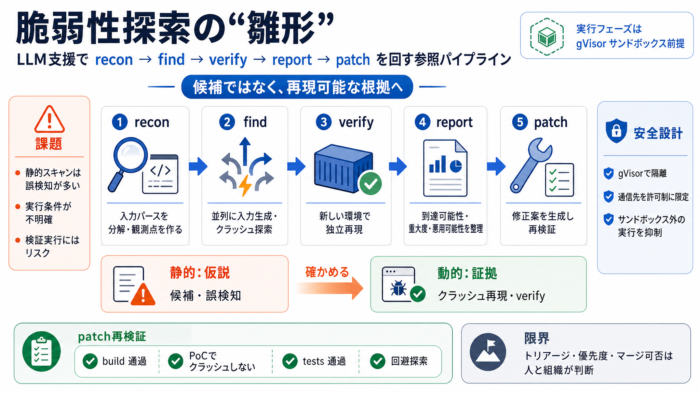

Securing Claude Managed Agents - Pluto Security
# Securing Claude Managed Agents: What You Need to Know Before Going to Production. Claude Managed Agents is Anthropic’s…

# Securing Claude Managed Agents: What You Need to Know Before Going to Production. Claude Managed Agents is Anthropic’s…
# Claude Managed Agents: What It Actually Offers, the Honest Pros and Cons, and How to Run Agents Yourself | by unicodev…
Anthropic just released Claude Managed Agents, a way to create custom AI agents that run entirely on Anthropic's infrast…
# Claude Managed Agents Pricing and Beta Limits. Claude Managed Agents charges tokens plus $0.08/session-hour runtime, w…
| **Conversion** | Token usage rated in USD at standard per-model, per-feature rates (same as [Claude API pricing](#mode…